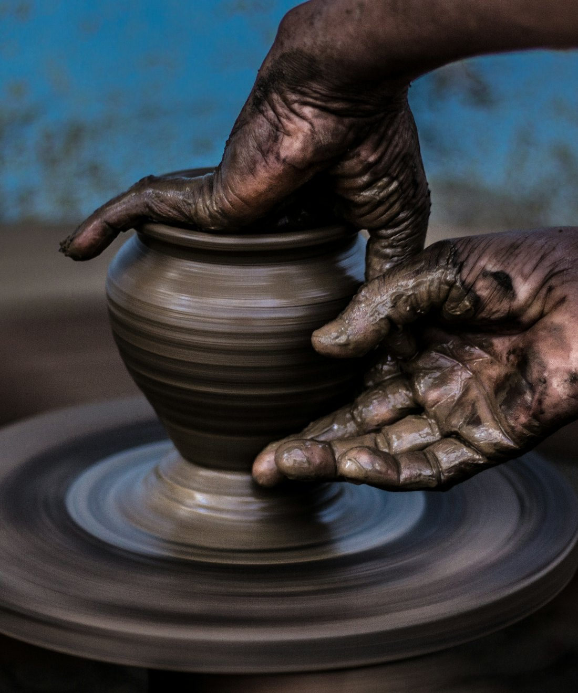
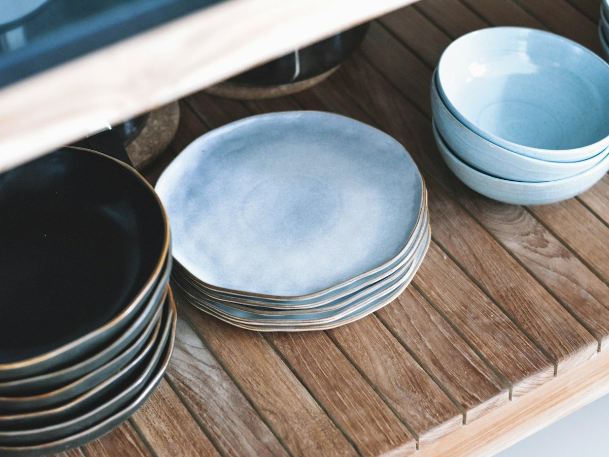
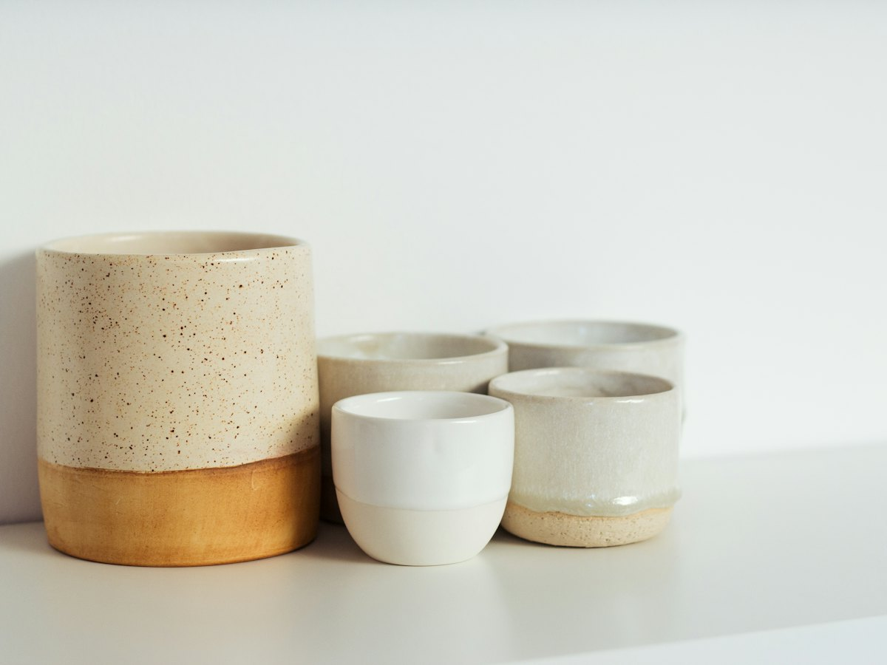

Atelier de céramique · Nantes, Chantenay
Apprendre le tour de potier à Nantes
Tournage, modelage et émaillage dans une ancienne menuiserie. Maëlle Guivarch, céramiste, donne tous les cours elle-même.
- Groupes
- six personnes au plus
- Compris
- la terre, les émaux et les deux cuissons
- Prix
- 55 € la séance découverte de 2 h 30

Formules et tarifs
Quatre façons de venir
Tarifs au 1er septembre 2026. Terre, émaux et cuissons compris.
- Découverte du tour
- 55 €Une séance de 2 h 30.
- Cycle tournage débutant
- 290 €6 séances de 2 h 30, le mardi ou le jeudi soir.
- Modelage parent-enfant
- 40 € le duoUne séance de 1 h 30, le mercredi après-midi, dès 6 ans.
- Atelier libre
- 12 € de l'heurePour les anciens élèves, tour et four à disposition. Sur demande, par téléphone ou e-mail.
Bons cadeaux
Un bon cadeau a le montant de la formule de votre choix. Il est valable un an et se demande par e-mail.
Paiement et annulation
Paiement sur place, par chèque ou carte. Une séance annulée moins de 48 h avant n'est pas remboursée mais peut être reportée une fois.

L'atelier
Une ancienne menuiserie, à Chantenay
L'atelier a ouvert en 2016 dans une ancienne menuiserie du quartier Chantenay. Maëlle Guivarch, céramiste, y donne tous les cours elle-même, par groupes de six personnes au plus.
On y apprend le tournage, le modelage et l'émaillage. La terre, les émaux et les deux cuissons sont compris dans le prix.
Chaque élève repart avec ses pièces, trois semaines après le dernier cours, le temps du séchage et des cuissons.
Horaires
Quatre jours par semaine
- Mardi et jeudi
- 18 h 30 – 21 h
- Mercredi
- 14 h – 17 h 30
- Samedi
- 10 h – 13 h (découverte du tour)
- Dimanche, lundi, vendredi
- fermé
Venir
14 rue de la Verrerie, à Nantes

- Adresse
- 14 rue de la Verrerie, 44100 Nantes
- Tram
- ligne 1, arrêt Gare maritime, puis 6 minutes à pied
Une question, un bon cadeau, l'atelier libre : appelez ou écrivez à Maëlle.
Appeler le 02 40 55 01 27Écrire à bonjour@terre-et-feu.example
Réserver une séance
Choisissez votre formule et votre date : la place est retenue tout de suite, et vous payez sur place.